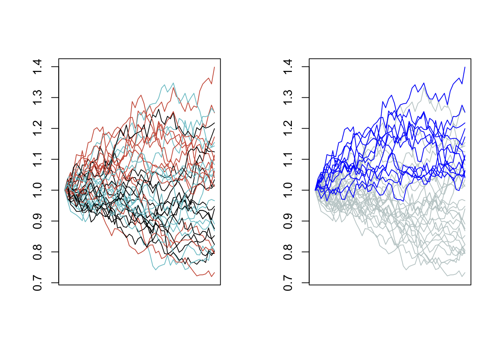

Notes
Ivan Tan
2017-03-06
Chapter 1 Diffusion
In no-arbitrage pricing one way to model a stock diffusion is using the following GBM model:
\[S_T = S_0 \cdot e^{\Big( r-d-q -\frac{1}{2}\sigma^2 \Big)\cdot T + \sigma \sqrt{T}\cdot W_T } \]
Given the drift and volatility market parameters we can simulate sample final spot levels as such:
aSampleSpotT = function(s0, r, d, q, sig, dt, nsims)
{
sT = s0 * exp((r - d - q - 0.5 * sig^2)*dt +
sig * rnorm(nsims) * sqrt(dt))
sT
}
cat("Spot after 1 year: ", aSampleSpotT(1, 0.04, 0.01, 0, 0.2, 1, 1))## Spot after 1 year: 0.8346366If required we may also compute over several consecutive periods to generate a trajectory. If we repeat this process many times we see how the stock diffusion is going to look like.
Assuming we will drift the stock by 0% p.a., that is market parameters \(r - d - q = 0\), and that it has constant annualised volatility of 20%, Let’s plot several trajectories. See Figure 1.1:
numSteps = 52 # weekly
oneTraj = rep(1, numSteps)
for (i in 2:numSteps)
oneTraj[i] = aSampleSpotT(oneTraj[i-1], 0, 0, 0, 0.2, 1/numSteps, 1)
cat("First 5 weekly close: ", oneTraj[1:5])## First 5 weekly close: 1 1.013002 0.9780054 0.9733317 0.9640561par(mfrow = c(1, 2))
plot(oneTraj, type = "l",
axes = F, xlab = "", ylab = "",
ylim = c(min(manyTraj), max(manyTraj)))
box()
axis(side = 2)
plot(manyTraj[1,], type = "l",
axes = F, xlab = "", ylab = "",
ylim = c(min(manyTraj), max(manyTraj)))
box()
axis(side = 2)
for (i in 2:nrow(manyTraj))
lines(manyTraj[i,], type = "l")Figure 1.1: Left: 1 path, Right: 30 paths
1.1 Basket
It was assumed that each path (and can also be thought as each underlying) is independent of one another. However, when attempting to simulate several underlyings, it would not be unreasonable to consider the underlyings are actually correlated. They are likely to also have different market parameters.
As an example we have a basket on three underlyings, with log returns of each underlying having pairwise correlation of 90%. See Table 1.1.
The (multivariate) GBM process can be extended to underlyings that are correlated. Their correlations are preserved within the multivariate random portion of the process.
One way of generating a correlated multivariate random \(W_T\) vector is to left-multiply a lower triangular Cholesky decomposed matrix to an uncorrelated multivariate random vector.1 2
corr_more = matrix(c(1.0, 0.9, 0.9,
0.9, 1.0, 0.9,
0.9, 0.9, 1.0),
nrow = 3,
dimnames = list(c("undl1", "undl2", "undl3"),
c("undl1", "undl2", "undl3")))| undl1 | undl2 | undl3 | |
|---|---|---|---|
| undl1 | 1.0 | 0.9 | 0.9 |
| undl2 | 0.9 | 1.0 | 0.9 |
| undl3 | 0.9 | 0.9 | 1.0 |
corrSpot = function(s0, r, d, q, sig, dt, corrMat)
{
numUndls = nrow(corrMat)
correlatedRV = as.double(t(chol(corrMat)) %*% rnorm(numUndls))
sT = s0 * exp((r - d - q - 0.5 * sig^2)*dt +
sig * correlatedRV * sqrt(dt))
sT
}
numUndls = nrow(corr_more)
numSteps = 52 # weekly
corrTraj = matrix(rep(1, numSteps*numUndls), nrow = numUndls)
for (i in 2:numSteps)
corrTraj[,i] = corrSpot(corrTraj[,i-1], 0, 0, 0, 0.2, 1/numSteps, corr_more)| wk1 | wk2 | wk3 | wk4 | wk5 | |
|---|---|---|---|---|---|
| undl1 | 1 | 0.9895232 | 0.9738888 | 0.9657227 | 1.006794 |
| undl2 | 1 | 1.0026743 | 0.9866878 | 1.0021548 | 1.046060 |
| undl3 | 1 | 0.9978140 | 0.9710374 | 0.9915827 | 1.042995 |
Sample paths of the underlyings. In black is underlying 1, in red underlying 2, in green underlying 3. See Figure 1.2:
Figure 1.2: Two separate simulations of the paths of the underlyings in the basket
1.2 Worst-of
From a basket of underlyings, we could choose the lowest performing underlying and call it the worst-of underlying. Making this choice over the entire tenor of the product we can visual what a worst-of trajectory looks like.
corr_less = matrix(c(1.0, 0.0, 0.1,
0.0, 1.0, 0.0,
0.0, 0.0, 1.0),
nrow = 3,
dimnames = list(c("undl1", "undl2", "undl3"),
c("undl1", "undl2", "undl3")))
corrTraj2 = matrix(rep(1, numSteps*numUndls), nrow = numUndls)
for (i in 2:numSteps)
corrTraj2[,i] = corrSpot(corrTraj2[,i-1], 0, 0, 0, 0.15, 1/numSteps, corr_less)To make it obvious that a worst-of “underlying” does not have to be the same underlying at different point of time, we chose to create a much lower correlated basket of underlyings. We also chose to fix the annualised volatility of these underlyings constant at 15%.
In this stylised result we see how the worst-of underlying may differ over time.
print(corrTraj2[,1:5]) # First 5 weekly close of 3 less correlated undls## [,1] [,2] [,3] [,4] [,5]
## [1,] 1 0.9658091 1.0074175 1.0173769 1.004773
## [2,] 1 1.0100198 0.9965954 0.9945832 1.032681
## [3,] 1 1.0192428 1.0423842 1.0661063 1.074612woTraj = apply(corrTraj2, 2, min)
print(woTraj[1:5]) # First 5 weekly close of the worst "underlying"## [1] 1.0000000 0.9658091 0.9965954 0.9945832 1.0047731Let’s plot one sample of all underlying paths. On the right we overlay the worst-of “underlying” in blue while greying out the actual underlying paths. See Figure 1.3:
par(mfrow = c(1, 2))
plot(corrTraj2[1,], type = "l",
axes = F, xlab = "", ylab = "",
ylim = c(min(corrTraj2), max(corrTraj2)))
box()
axis(side = 2)
for (i in 2:nrow(corrTraj2))
lines(corrTraj2[i,], type = "l", col = basketCols[i])
plot(corrTraj2[1,], type = "l",
axes = F, xlab = "", ylab = "", col = "azure3",
ylim = c(min(corrTraj2), max(corrTraj2)))
box()
axis(side = 2)
for (i in 2:nrow(corrTraj2))
lines(corrTraj2[i,], type = "l", col = "azure3")
lines(woTraj, type = "l", col = "blue")Figure 1.3: A basket of 3 underlyings (in grey) and the worst-of underlying (in blue)
A relevant question is why anyone would want to buy a call option that tracks the worst performance instead of the average performance, since the alternative is very likely to pay more at maturity. A sensitive answer is that if the investor has a bullish view on the entire basket, buying a worst-of call option is a lot more affordable than buying a call that is based on the average performance. As we’ll see in Chapter 3, this makes possible some interesting exotic payoffs.
1.3 Best-of
Having seen a worst-of underlying, there is no reason why we cannot have a best-of version.
Unlike the worst-of call option, a best-of call is more expensive than the average of call. However, if you have a bearish view, buying a best-of put is much more affordable. Likewise, selling a best-of call brings the investor much more premium.
print(corrTraj2[,1:5]) # First 5 weekly close of 3 correlated undls## [,1] [,2] [,3] [,4] [,5]
## [1,] 1 0.9658091 1.0074175 1.0173769 1.004773
## [2,] 1 1.0100198 0.9965954 0.9945832 1.032681
## [3,] 1 1.0192428 1.0423842 1.0661063 1.074612boTraj = apply(corrTraj2, 2, max)
print(woTraj[1:5]) # First 5 weekly close of the worst "underlying"## [1] 1.0000000 0.9658091 0.9965954 0.9945832 1.0047731Again, we see there is no need for the best-of “underlying” to be the same underlying in the basket from start to end of the product tenor. See Figure 1.4:
par(mfrow = c(1, 2))
plot(corrTraj2[1,], type = "l",
axes = F, xlab = "", ylab = "",
ylim = c(min(corrTraj2), max(corrTraj2)))
box()
axis(side = 2)
for (i in 2:nrow(corrTraj2))
lines(corrTraj2[i,], type = "l", col = basketCols[i])
plot(corrTraj2[1,], type = "l", col = "azure3",
axes = F, xlab = "", ylab = "",
ylim = c(min(corrTraj2), max(corrTraj2)))
box()
axis(side = 2)
for (i in 2:nrow(corrTraj2))
lines(corrTraj2[i,], type = "l", col = "azure3")
lines(boTraj, type = "l", col = "blue")Figure 1.4: A basket of 3 underlyings (in grey) and the best-of underlying (in blue)
Now we repeat the over many simulations of the 3 underlyings paths. On the right we overlay in blue the best-of “underlying” of each simulation.
